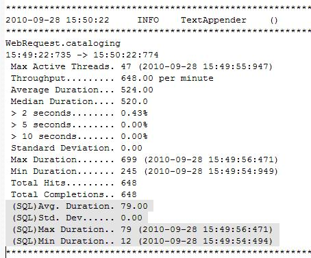

Whats New in 1.1.1.GA
PerfMon4j™ 1.1.1.GA is a maintenance release containing some minor fixes and enhancements. See the readme.text file for details.Whats New in 1.1.0.GA
PerfMon4j™ can now monitor what percentage of your application processing time is spent in SQL. Overview
PerfMon4j™ is a software API designed to diagnose and monitor application performance while the software is under load. It allows monitoring application on many levels, including:- Method via declarative programming using Java Annotations.
- Method level via the Java Agent Instrumentation API.
- Servlet Request level via a Servlet Filter.
- Arbitrary code execution point via inserted timers.
Additional facilities enable monitoring web request, client browser information and arbitrary system health information
Perfmon4j should not be confused with a profiler. While profilers are typically used to snapshot performance in test environments Perfmon4j provides an API to build performance monitors into your application. Like a profiler, Perfmon4j can monitor Java classes/methods at the byte code level without inserting custom code. Perfmon4j provides features beyond those typically found in profilers to enable the creation of a comprehensive monitoring system that enables detailed metrics on the usage and performance of your deployed system under load. These features include:
- Random Sampling -
- UserAgent Tracking (For Web based applications)
- Arbitrary timings based on code insertion
- Nested timings
- Monitor throughput and maximum concurrent threads
- Monitor arbitrary server metrics.
- Extremely low overhead when monitoring is disabled
- Extendable appender can be used to write data metrics to a variety of output formats.
- Arbitrary timings based on method parameters
Perfmon4j has proven to be a powerful and effective tool in monitoring large scale enterprise applications under load.
Features
- Interval Timing
- Java Agent Instrumentation of code
- Runtime configuration through XML Based Configuration files
- Servlet Request Monitoring
- Java Stack Trace Sampling
- Interval Monitoring
- Snapshot Monitor Support
Documentation
Acknowledgments
Java byte code manipulation is implemented with the Javaasist Byte Code library.Perfmon4j™ is a trademark of Follett Software Company
Java™ is a trademark of Sun Microsystems, Inc
Javassist ©1999-2008, Shigeru Chiba.